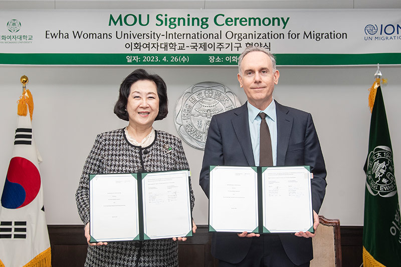

본교, 국제이주기구와 이주 정책 공동 연구 및 인재양성을 위한 업무협약 체결
본교는 4월 26일(수) UN 전문기구인 국제이주기구(International Organization for Migration, 이하 IOM)와
업무협약(MOU)을 맺고, 이주 정책 분야에서의 공동연구를 위해 협력하기로 했다. 김은미 총장과 IOM 한국대표부
Steven Hamilton 대표 IOM은 UN 내 이주 분야를 담당하는 기구로, 정기적이고 안전하며 질서 있는 이주를
촉진하기 위해 △이주 관리 △위기 대응 △국제협력 및 파트너십 △데이터 분석 및 연구 등 다양한 활동을
펼치고 있다.